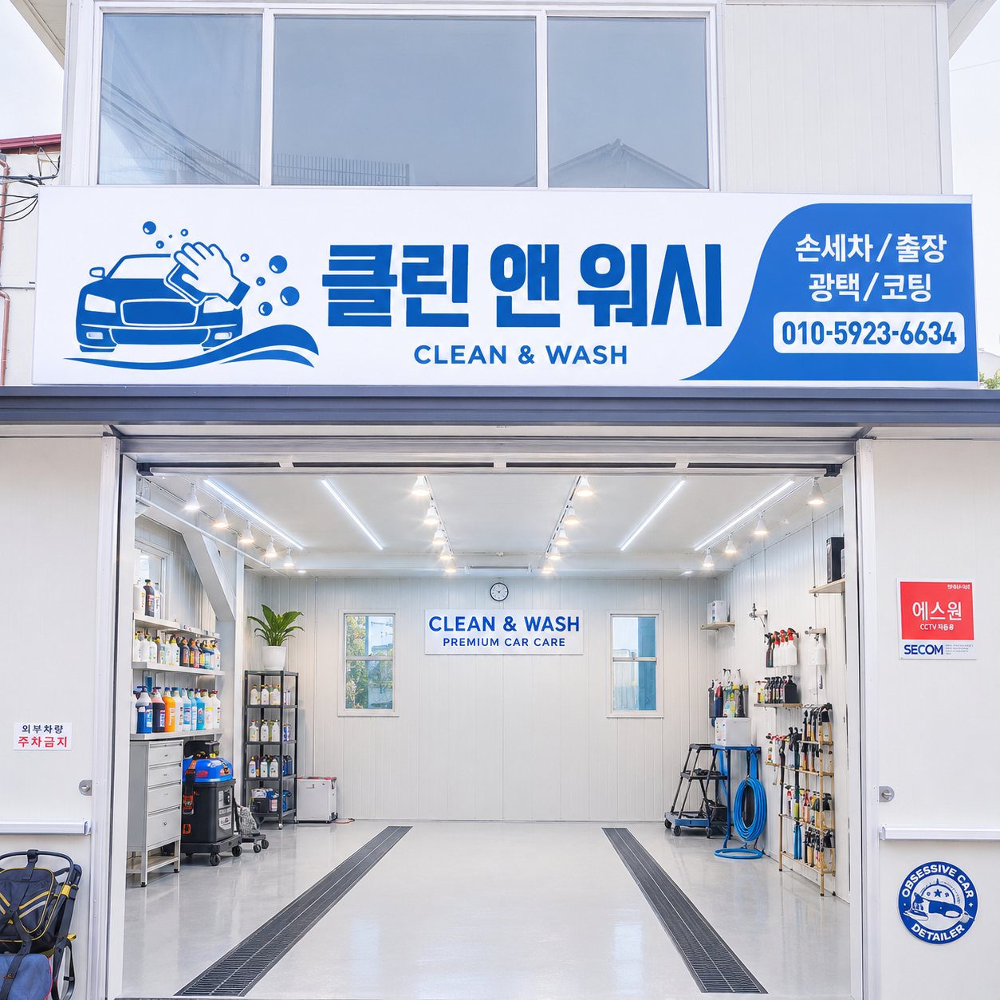

01
일반 손세차
외부 고압 세차와 실내 스팀 세차를 기본으로 차량을 깔끔하게 정돈합니다.
Jecheon premium car care
밝고 깨끗한 전용 베이에서 손세차, 출장 광택, 코팅까지 차량 상태에 맞춰 정교하게 관리합니다.

Services
외부 고압 세차와 실내 스팀 세차를 기본으로 차량을 깔끔하게 정돈합니다.
철분 제거와 QD 마감까지 더해 도장면의 잔오염과 광택감을 함께 관리합니다.
엔진룸, 철분, 카나우바 고체왁스까지 포함해 한 단계 높은 마감을 제공합니다.
Process
세차 품질은 작업 전 확인에서 시작됩니다. 클린앤워시는 차종과 오염 상태를 확인하고, 고객이 원하는 관리 범위를 들은 뒤 작업을 진행합니다.
차종, 외부 오염, 실내 상태, 추가 관리가 필요한 부분을 먼저 살펴봅니다.
외부, 휠, 유리, 실내처럼 영역을 나누어 순서대로 작업합니다.
물기, 유리 얼룩, 타이어 주변, 실내 잔여 먼지를 마지막으로 확인합니다.
Price
| 구분 | 일반세차 외부고압세차 · 실내스팀세차 | 고급세차 외부고압 · 실내스팀 · 철분 · QD | 프리미엄세차 외부고압 · 실내스팀 · 엔진룸 · 철분 · 카나우바 고체왁스 |
|---|---|---|---|
| 경차 | 3.0 | 5.0 | 10 |
| 소형 | 3.5 | 5.5 | 10.5 |
| 중형 | 4.0 | 6.0 | 11 |
| 준대형 | 4.5 | 6.5 | 11.5 |
| 대형 | 5.0 | 7.0 | 12 |
| 소형SUV | 4.5 | 6.5 | 11.5 |
| 중형SUV | 5.0 | 7.0 | 12 |
| 대형SUV | 6.0 | 8.0 | 13 |
| 특대형SUV | 7.0 | 9.0 | 14 |
| 승합 | 8.0 | 10 | 15 |
차량 실내·외부 오염도에 따라 추가금액이 발생될 수 있습니다. 차량 내부 귀중품과 분실 가능 물품은 챙겨주세요. 석회물, 물때 제거, 시멘트 제거, 페인트 날림은 별도 협의입니다.